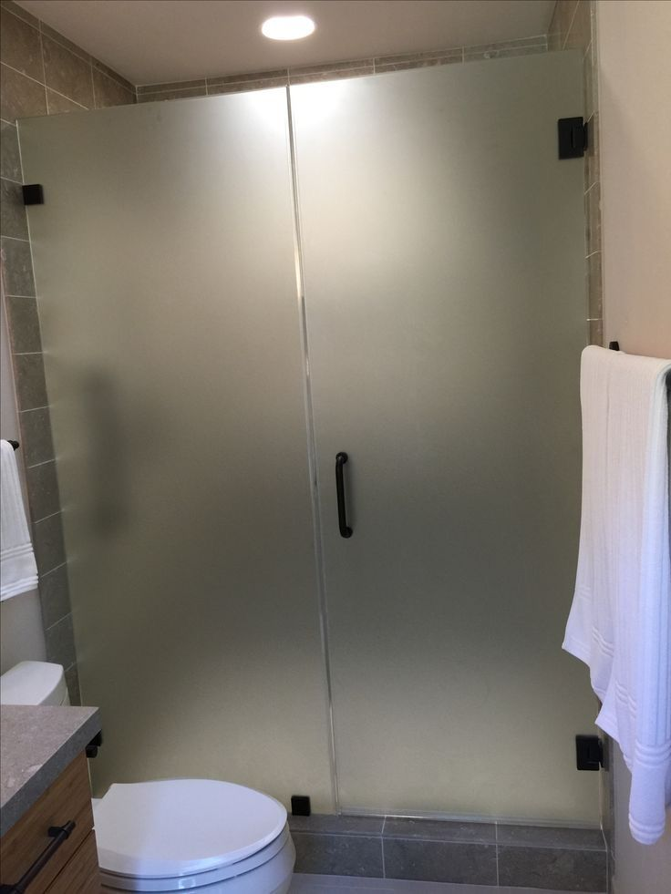

Porte battante en verre
Pivot au sol ou charnières murales, verre trempé 10 mm, clair ou dépoli selon l'intimité recherchée.
Portes & cloisons en verre · sur mesure
Une cloison en verre sépare sans cloisonner. Elle délimite un espace, laisse circuler la lumière et agrandit visuellement la pièce. Chez vous comme au bureau, chaque panneau est mesuré sur place et fabriqué à la cote.
Pour la maison
Séparer une pièce, gagner de la place ou garder la lumière — chaque panneau est fabriqué à la cote relevée chez vous.

Pivot au sol ou charnières murales, verre trempé 10 mm, clair ou dépoli selon l'intimité recherchée.

Rail apparent en inox 304 ou rail encastré. Gain de place réel dans les couloirs et les petites pièces.

Séparer une entrée, une cuisine ouverte ou une chambre sans perdre de lumière.
Professionnels
Cloisons de bureau, salles de réunion, façades de boutique, séparations d'open space. Le verre trempé 10 mm avec quincaillerie inox 304 supporte un usage intensif : ouverture et fermeture répétées, nettoyage fréquent, passage constant. Nous intervenons sur des projets d'un panneau comme sur des plateaux complets, avec un relevé sur site et une pose planifiée hors heures d'activité si nécessaire.
Finitions
Le clair maximise la lumière et la transparence. Le dépoli laisse passer la lumière en coupant la vue — c'est le choix courant pour une salle de réunion ou une porte de chambre. Le sérigraphié permet un motif ou un bandeau, souvent utilisé pour marquer la présence du verre à hauteur d'œil et éviter les chocs.
Quincaillerie
Choisie selon le type d'ouverture et le support relevé sur place.
Apparents ou encastrés.
Processus
De l'échange initial à la pose finale, nous encadrons chaque étape, du premier contact au dernier réglage.
Échange sur votre projet, le type d'ouverture et la finition du verre souhaitée.
Déplacement sur place pour un relevé précis et la validation technique du support.
Découpe et façonnage du verre trempé sur mesure, selon les cotes relevées.
Pose soignée par notre équipe sous 72 heures maximum après validation des cotes.
Questions fréquentes
Zone d'intervention
Bouznika, Témara, Rabat, Salé, Kénitra, Mohammedia et les environs.
Contact
Décrivez votre projet : on revient vers vous rapidement pour organiser une prise de mesure gratuite.
Envoyez vos dimensions et une photo de l'emplacement. On vous répond avec une estimation, puis on organise la mesure gratuite.
Obtenir mon estimation sur WhatsAppVous préférez l'e-mail ? Écrivez-nous.
Prise de mesure à domicile gratuite et sans engagement.